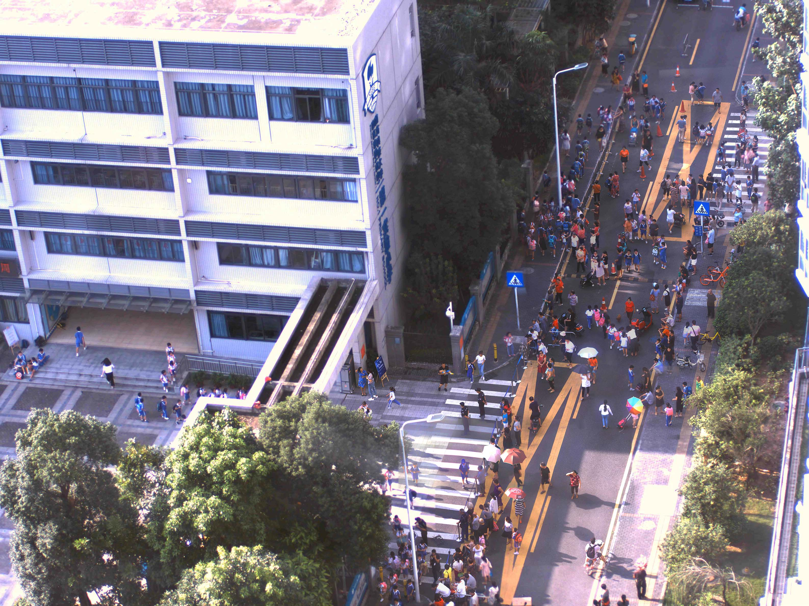
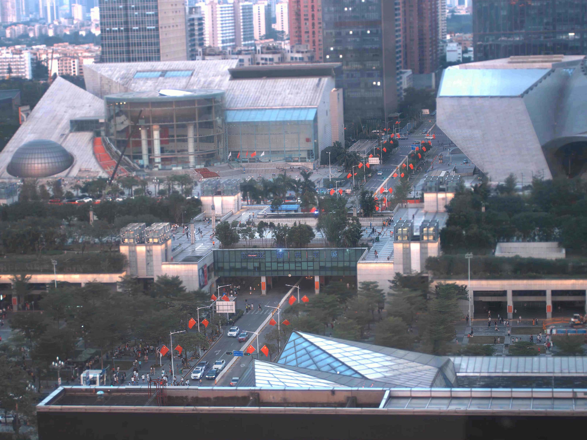
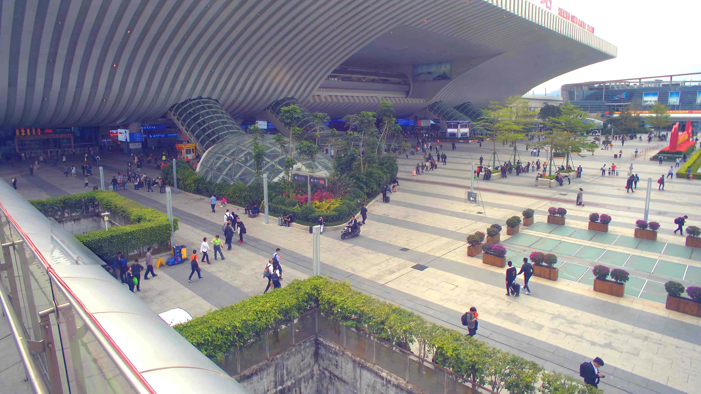
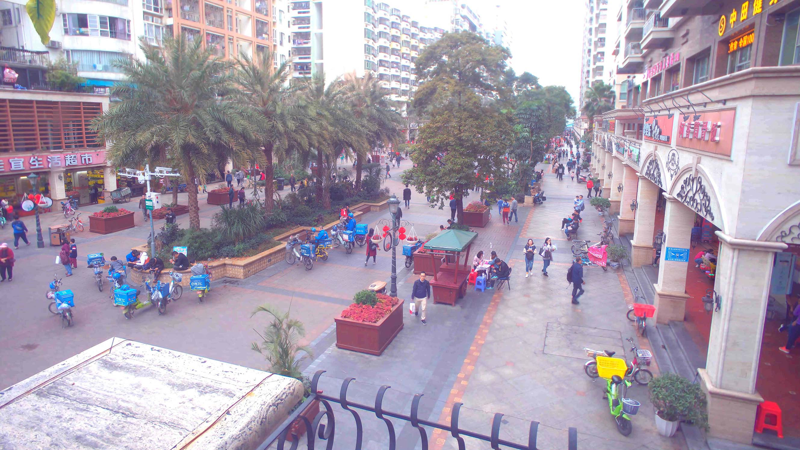
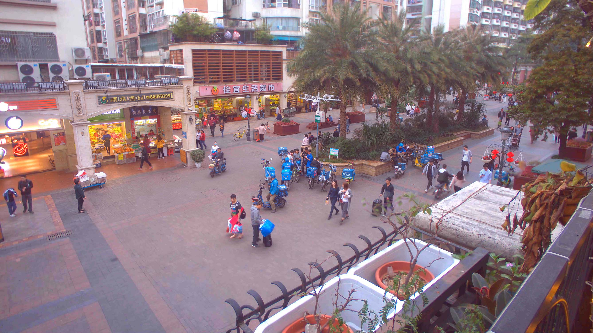
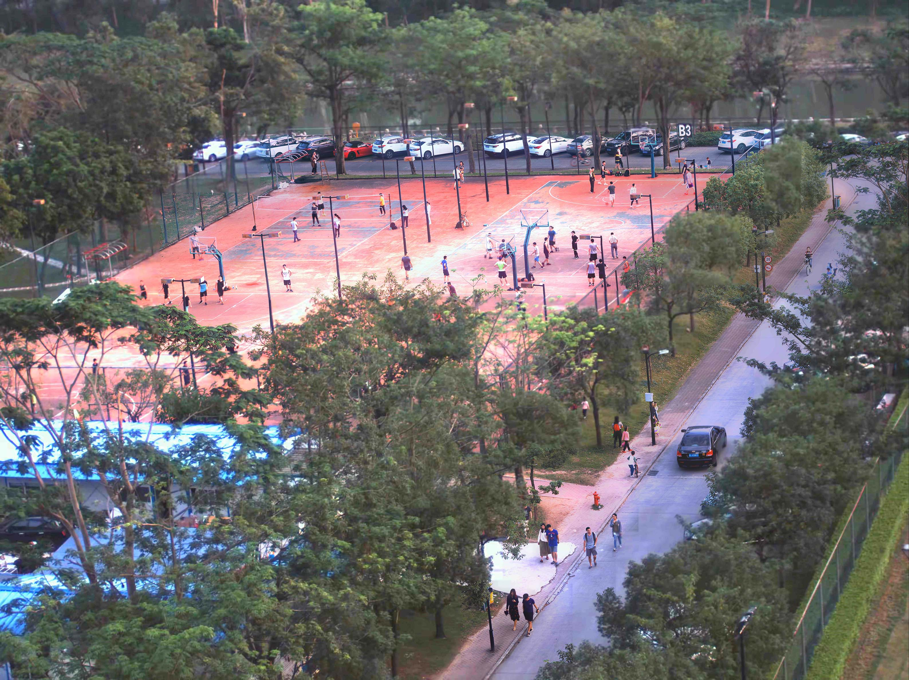
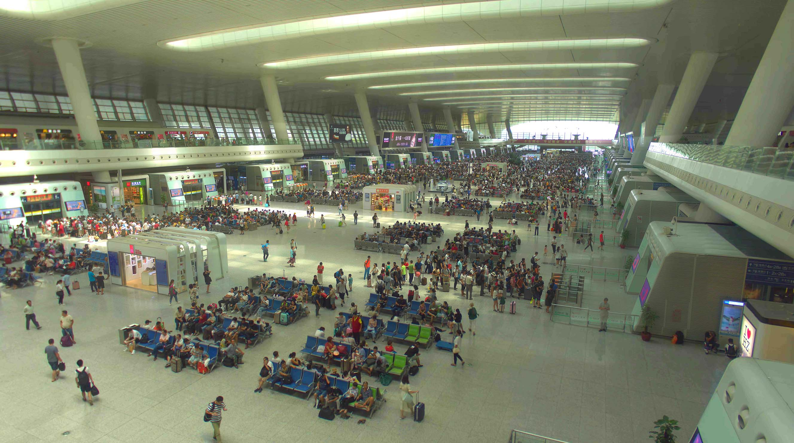
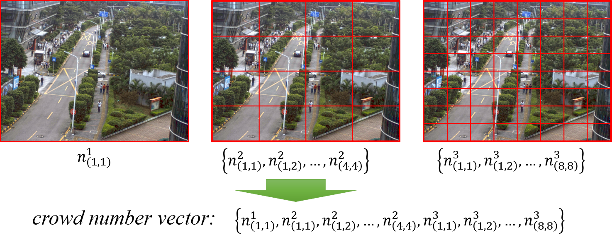

Deep learning based computer vision algorithms have surpassed the human-level performance for many CV tasks, like object recognition and face verification. However, computer vision technology relies on the valid information from the input image and video, and the performance of the algorithm is essentially constrained by the quality of source image/video. Along with the emergence of gigapixel-level image/video, the corresponding computer vision tasks remain unsolved, due to the extremely high-resolution, large-scale, huge-data that induced by the gigapixel camera.
This task is intended to evaluate the ability of algorithms to estimate the crowd density map in a complex scenario. For this task, participants will use our Gigapixel Video Dataset, a new resource with high spatial resolution and wide FOV simultaneously for computer vision challenges.
Our crowd counting datasets will be used for this task. This dataset consists of 65 representative images from the train station and the shanghai marathon sequences. These images are saved in JPEG format with more than 200K heads and always have a resolution of 32000x24000 or 27000x15000. We will release more labeled data in the future.
|  |  |  |  |  |  |  |
Invalid Area
Limited by the resolution, sometimes even human can not clearly count the exact number of people in some far places. Therefore, we have delineated some invalid areas which are considered artificially unrecognizable and have no groundtruth label.
| Dataset | Image Size | Invalid Area |
|---|---|---|
| shanghai_marathon | 26908 × 15024 | 1 ≤ x ≤ 26908, 1 ≤ y ≤ 6670 |
| train_station | 26558 × 14828 | 1 ≤ x ≤ 26558, 1 ≤ y ≤ 5130 |
Note: The top left pixel is set to the origin of the coordinates (x = 1, y = 1).
The groundtruth labels are saved in .json files. Each pair of x and y coordinates represents a head position. The top left pixel is (1,1).
{ "JPG_FILE_PATH":[ {"x": x_coordinate, "y": x_coordinate }, {"x": x_coordinate, "y": x_coordinate }, ... ], ... }
The crowd distribution of this crowd counting task is represented by crowd number vector. First, the whole image will be divided into 1x1, 4x4, 8x8 blocks. After that, the number of human in each block will be estimated. Finally, the crowd number vector is generated from the estimate human number of these blocks. Meanwhile, two classical result evaluation indexes, MAE and MSE, are also selected as metrics in our evaluation process.

Three kinds of errors will be calculated from the crowd number vector (g represents the groundtruth crowd number vector):
Meanwhile, two classical result evaluation indexes, MAE and MSE, are also selected as metrics in our evaluation process.
Here, we provide a toolbox to evaluate results of models and visualize annotations. Website: https://github.com/GigaVision/CrowdCountingTools.
When using our datasets in your research, we will be happy if you cite us! For all of the datasets, please cite:
@inproceedings{yuan2017multiscale, title={Multiscale gigapixel video: A cross resolution image matching and warping approach}, author={Yuan, Xiaoyun and Fang, Lu and Dai, Qionghai and Brady, David J and Liu, Yebin}, booktitle={Computational Photography (ICCP), 2017 IEEE International Conference on}, pages={1--9}, year={2017}, organization={IEEE} }
This dataset is for non-commercial use only. However, if you find yourself or your personal belongings in the data, please contact us, and we will immediately remove the respective images from our servers.
In this track, other dataset such as ShanghaiTech crowd counting dataset (https://github.com/desenzhou/ShanghaiTechDataset) can be used for training, too.